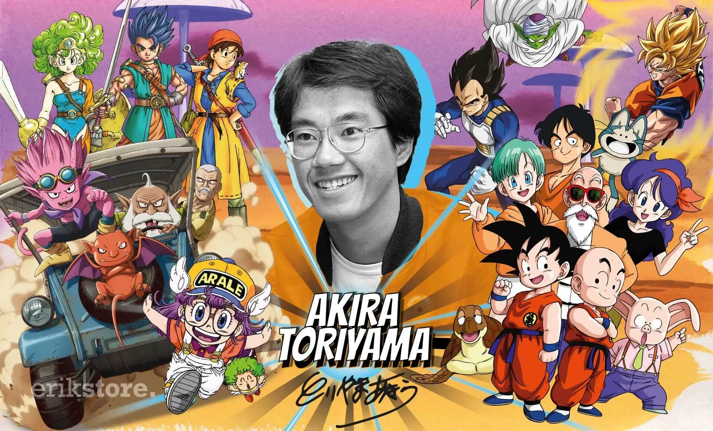

Dragon Ball es un anime creado por Akira Toriyama en 1986, basado en el manga del mismo nombre. La historia de Dragon Ball sigue las aventuras de Son Goku, un niño con una fuerza sobrehumana que vive en una tierra llena de misterios y criaturas extraordinarias. Desde su lanzamiento, Dragon Ball ha sido una de las series más exitosas y queridas en la cultura pop mundial.
Este anime comenzó como un simple proyecto inspirado en la clásica novela china "Viaje al Oeste", pero rápidamente se transformó en un fenómeno global, convirtiéndose en una de las franquicias más icónicas de la historia del anime.
Autor
Akira Toriyama, nacido en 1955 en Japón, es el creador de Dragon Ball, una de las series de manga y anime más populares del mundo. Comenzó su carrera en 1978 y alcanzó la fama con Dragon Ball en 1984. Es reconocido por su estilo único de dibujo y por haber dejado una huella profunda en la cultura del manga y el anime.

Historia
Dragon Ball narra la vida de Goku, un joven de cola de mono que tiene una fuerza increíble y una curiosidad insaciable por explorar el mundo. A lo largo de la serie, Goku busca las Esferas del Dragón, poderosas gemas mágicas que, cuando se reúnen todas, invocan a un dragón que concede un deseo.
A medida que avanza la serie, Goku se enfrenta a una variedad de villanos poderosos, y en el camino, se hace amigo de personajes como Bulma, Krillin, y Piccolo. A lo largo de las diferentes sagas, Goku se transforma en un guerrero más fuerte, enfrentando desafíos cada vez mayores y alcanzando nuevas formas de poder, como el Super Saiyan.
Personajes
Goku
Goku es el protagonista principal de Dragon Ball. Es un guerrero Saiyan que posee una fuerza increíble y una habilidad excepcional para aprender técnicas de combate. Goku es conocido por su valentía, su corazón puro y su amor por el entrenamiento. A lo largo de la serie, se transforma en uno de los luchadores más poderosos del universo.
Vegeta
Vegeta es el príncipe de los Saiyans y uno de los personajes más complejos de Dragon Ball. A pesar de ser inicialmente un villano, Vegeta se convierte en un aliado de Goku y uno de los luchadores más poderosos de la serie. Su orgullo y ambición lo empujan a buscar siempre superar a Goku, convirtiéndolo en un rival formidable.
Piccolo
Piccolo es un Namekiano y uno de los personajes más importantes de la serie. Inicialmente, era uno de los enemigos de Goku, pero con el tiempo se convierte en uno de sus aliados más cercanos y en una figura paternal para Gohan, el hijo de Goku. Su sabiduría y habilidades en combate lo convierten en uno de los personajes más queridos.
Escala de Poder
La escala de poder en Dragon Ball es un concepto central de la serie. Cada vez que un personaje alcanza un nuevo nivel de poder, su fuerza aumenta de forma exponencial. Los Saiyans, como Goku y Vegeta, tienen la capacidad de transformarse en formas más poderosas como el Super Saiyan, lo que les permite enfrentar amenazas cada vez mayores.
Además de las transformaciones, los personajes de Dragon Ball cuentan con una amplia gama de habilidades, como el Kamehameha, una técnica de energía extremadamente poderosa utilizada principalmente por Goku, o el Final Flash de Vegeta, otro ataque devastador. Las batallas en Dragon Ball son intensas, y cada nuevo enfrentamiento muestra una escala de poder aún más impresionante.